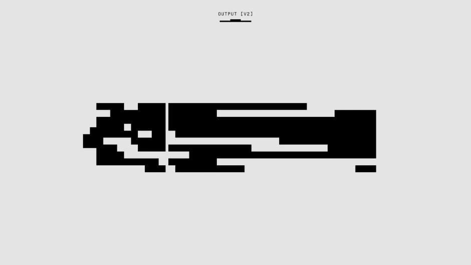

Computer Vision From Pixels to Predictions, One Example
A small grid of numbers becomes a decision. Here is the whole journey a convolutional network takes, worked through with one tiny image.
Why this is worth slowing down for
It is easy to use a computer vision model without ever asking what happens between the image going in and the label coming out. You load a pretrained network, fine-tune it on your dataset, watch accuracy climb, and move on. That workflow is fine for getting results, but it leaves a gap in understanding that eventually costs you, usually at the point where the model fails in a way you cannot explain.
I think the gap closes fastest with a tiny, concrete example rather than a diagram of a famous architecture. So here is one: a six by six grayscale image of a rough diagonal line, each pixel a number from 0 (black) to 255 (white). The task is binary classification, does the image contain a diagonal line or not. It is a toy problem, but every mechanism that matters in a full-scale vision model is present in miniature.
Treating the problem this small also forces honesty about what a convolution actually computes, rather than relying on the comforting but vague idea that the network 'learns features'. Once you can trace the arithmetic by hand for one patch of pixels, the behaviour of much larger networks stops feeling mysterious.
From a grid of numbers to a feature map
Start with the raw input: thirty-six numbers arranged in a six by six grid. A convolutional layer slides a small filter, say three by three, across this grid. Suppose the filter has been trained to detect diagonal edges, with high positive weights along its own diagonal and negative weights elsewhere. At each position, the filter multiplies its weights against the pixel values underneath it and sums the result, producing a single number.
Where the filter sits over a patch of pixels that actually contains a diagonal edge, the positive weights line up with bright pixels and the negative weights line up with dark ones, so the sum is large. Where the patch is flat or the edge runs the wrong way, positive and negative contributions cancel and the sum stays near zero. Sliding this filter across the whole image produces a smaller grid, perhaps four by four, called a feature map. Each value in that map answers one narrow question: how strongly does a diagonal edge appear at this location.
This is the entire trick of convolution: instead of learning a separate rule for every pixel, the network learns one small, reusable pattern detector and applies it everywhere. A single filter with nine weights can describe a property that would otherwise require describing every possible position in the image separately. Stack several filters in one layer and you get several feature maps, each tuned to a different pattern, perhaps vertical edges, corners, or small blobs of contrast.
After the convolution, a non-linearity such as ReLU is applied, which simply sets any negative value to zero. This matters more than it looks. Without it, stacking multiple convolutional layers would mathematically collapse into one larger linear operation, and the network would never be able to represent anything beyond straight lines through the data. The non-linearity is what lets later layers combine edge detectors into corner detectors, and corner detectors into shape detectors.

Pooling, depth, and the march towards a decision
Next comes pooling, typically taking the maximum value within small two by two blocks of the feature map. This shrinks the four by four map down to two by two, keeping only the strongest edge response in each region and discarding exact position. For our diagonal line example, pooling means the network stops caring precisely which pixel the edge passed through and starts caring that a strong diagonal response occurred somewhere in that region. This is a deliberate trade: a little spatial precision is given up in exchange for robustness, so that the line being shifted by one or two pixels does not change the outcome.
In a real network this pattern repeats, convolution, non-linearity, pooling, convolution, non-linearity, pooling, many times over, with the number of filters typically increasing at each stage. Early layers detect edges and simple textures. Middle layers combine these into motifs, curves, corners, repeated patterns. Later layers combine those motifs into parts, and eventually into representations that correspond loosely to whole objects. None of this is programmed explicitly; it falls out of training the filter weights to reduce prediction error on labelled examples.
Eventually the spatial grid is flattened into a single long vector of numbers, which is fed into one or more fully connected layers. For our toy example, imagine the final pooled map collapses to four numbers, each summarising evidence for a diagonal pattern in one quadrant of the image. A fully connected layer combines these four numbers with learned weights to produce a single score. A sigmoid function squashes that score into a probability, say 0.87, meaning the model is fairly confident a diagonal line is present.
What actually makes this trustworthy
Understanding the mechanics is only half the job; the other half is knowing how to check the model is doing what you think it is doing. With our diagonal line example, it would be entirely possible for the filters to latch onto something irrelevant, say a slightly brighter corner pixel that happens to correlate with the label in the training set, rather than the diagonal structure itself. On a toy dataset this is obvious once you inspect it, but in a dataset of thousands of real photographs such shortcuts are easy to miss and can quietly inflate accuracy on a test set that shares the same spurious correlation.
This is why a leakage-aware evaluation split matters more than people expect. If your training and test images come from the same handful of source photographs, or share background and lighting conditions by accident of how the data was collected, a model can appear to generalise well while actually exploiting cues that will not transfer anywhere else. Checking which pixels drive a prediction, through a saliency map or a similar technique, is a cheap and useful habit: if the model is supposedly detecting a diagonal line but the highlighted region is a corner of background noise, that tells you something a validation accuracy number never will.
The practical takeaway is this: a convolutional network is not a black box so much as a long chain of small, inspectable arithmetic steps, a weighted sum here, a thresholding there, repeated and composed. You do not need to trace every filter in a large model by hand, but you should be able to explain, for at least one input, why the prediction came out the way it did. If you cannot do that for a six by six toy image, you have little hope of trusting the same model on a dataset with millions of real, messy, high-stakes photographs.